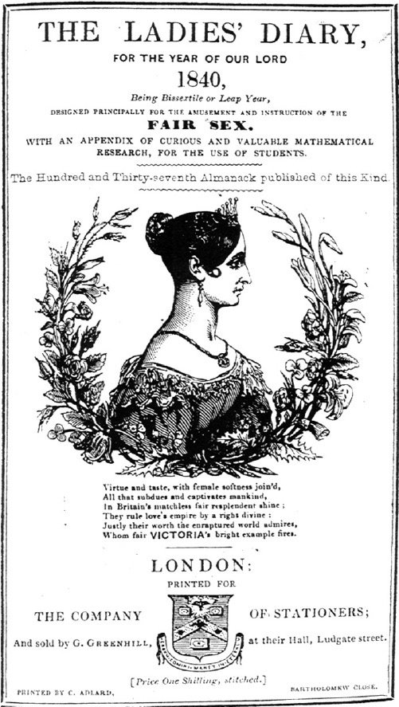

What are , , and in ?
It depends.
If you want three real numbers x,y,z satisfying x^3+y^3+z^3=33 then there are infinitely many, and they are very easy to find.
If you want three rational numbers x,y,z satisfying x^3+y^3+z^3=33 then there are still infinitely many, though they are somewhat harder to find.
If you want three integers, or whole numbers, satisfying that equation, then you'll need to be patient: nobody knows if such three numbers exist. 33 is the smallest natural number for which it is unknown if it can be represented as a sum of three cubes of integers.
UPDATE (March 2019): This was just solved!! Andrew Booker[1] just discovered how to represent 33 as a sum of three integer cubes:
\displaystyle \begin{aligned} a &= 8866128975287528 \\ b &= -8778405442862239 \\ c &= -2736111468807040 \\ 33 &= a^3+b^3+c^3\end{aligned}
For real solutions, consider
x=0, y=0, z=\sqrt[3]{33}
or
x=y=z=\sqrt[3]{11}
or
x=2, y=3, z=-\sqrt[3]{2}.
There clearly are infinitely many solutions: you can choose x and y to be whatever you want, and there's always exactly one z that works, since every real number has exactly one real cube root.
Want rational solutions? Here's a simple one:
\displaystyle (-4)^3+\left(-\frac{5}{3}\right)^3+\left(\frac{14}{3}\right)^3=33.
Once again, there are infinitely many such solutions, though that's not quite as obvious as the real case. If you pick x and y to be rational, there's generally no reason to assume that the corresponding z will be rational as well – see the earlier examples of real solutions.
But in fact, there are infinitely many ways of representing any rational number as the sum of three cubes of rationals. This was first discovered in 1825 by a schoolmaster from Leeds named S. Ryley, who published this discovery in “The Ladies’ Diary”, a publication which ran annually in London from 1704 to 1841, carrying the subtitle
"Containing New Improvements in ARTS and SCIENCES, and many entertaining PARTICULARS: Designed for the USE AND DIVERSION OF THE FAIR SEX."

One misses a time when the ladies of London were diverted by rational parametrizations of cubic equations.
The problem of representing integers as sums of cubes of integers is very difficult.
By simple considerations of residues modulo 9, there are no such representations for numbers which leave a remainder of 4 or 5 upon division by 9. For all other numbers, it is believed that such representations exist, but they are chaotic in a rather… diverting manner.
- 1=1^3+0^3+0^3
- 2=1^3+1^3+0^3
- 3=1^3+1^3+1^3
- 4 is ruled out
- 5 is ruled out
- 6=2^3+(-1)^3+(-1)^3
- 7=2^3+(-1)^3+0^3
- 8=2^3+0^3+0^3
- 9=2^3+1^3+0^3
- 10=2^3+1^3+1^3
- 11=3^3+(-2)^3+(-2)^3
- 12=10^3+7^3+(-11)^3
- 13 is ruled out
- 14 is ruled out
- 15=2^3+2^3+(-1)^3
- 16=2^3+2^3+0^3
- 17=2^3+2^3+1^3
- 18=3^3+(-2)^3+(-1)^3
- 19=3^3+(-2)^3+0^3
- 20=3^3+(-2)^3+1^3
- 21=16^3+(-14)^3+(-11)^3
- 22 is ruled out
- 23 is ruled out
- 24=2^3+2^3+2^3
- 25=3^3+(-1)^3+(-1)^3
- 26=3^3+(-1)^3+0^3
- 27=3^3+0^3+0^3
- 28=3^3+1^3+0^3
- 29=3^3+1^3+1^3
- 30=(-283059965)^3+(-2218888517)^3+2220422932^3
- 31 is ruled out
- 32 is ruled out
- 33=??? Nobody knows. (EDIT: See above – now solved!)
- 34=3^3+2^3+(-1)^3
- 35=3^3+2^3+0^3
- 36=3^3+2^3+1^3
- 37=4^3+(-3)^3+0^3
- 38=4^3+(-3)^3+1^3
- 39=134476^3+117367^3+(-159380)^3
- 40 is ruled out
- 41 is ruled out
- 42=??? Nobody knows. (EDIT: in Sep 2019, this was solved as well!)
The solutions given here are the smallest possible. The representation of 39 was found in 1992 by Heath-Brown, Lioen and te Riele. The representation of 30 was found in 1999 by Beck, Pine, Tarrant and Yarbrough Jensen[2].
It is possible that some number not ruled out by the congruence condition has no such representation, though I feel it's unlikely. It is also possible that the numbers involved are beyond reach with present or even future technologies. Such is math: there are no guarantees.
Footnotes